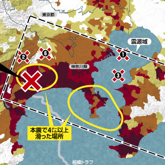

リードリード関東大震災100年にあたる今年、防災の一環として、さまざまな災害のデータを見てみる。近年は地震も多い印象リードリード関東大震災100年にあたる今年、防災の一環として、さまざまな災害のデータを見てみる。近年は地震も多い印象  関東大震災100年にあたる今年、防災の一環として、さまざまな災害のデータを見てみる。近年は地震も多い印象 地震と津波 関東大震災100年にあたる今年、防災の一環として、さまざまな災害のデータを見てみる。近年は地震も多い印象 台風と大雨 関東大震災100年にあたる今年、防災の一環として、さまざまな災害のデータを見てみる。近年は地震も多い印象 火山噴火と富士山 関東大震災100年にあたる今年、防災の一環として、さまざまな災害のデータを見てみる。近年は地震も多い印象 関東大震災 関東大震災100年にあたる今年、防災の一環として、さまざまな災害のデータを見てみる。近年は地震も多い印象 関東大震災 関東大震災100年にあたる今年、防災の一環として、さまざまな災害のデータを見てみる。近年は地震も多い印象